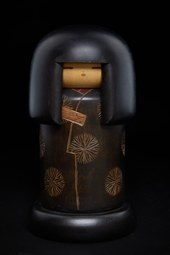
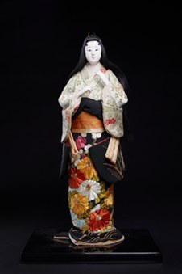
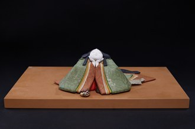
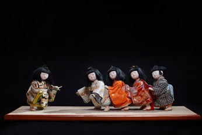
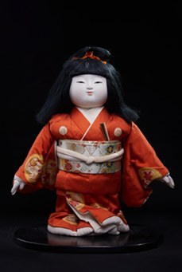
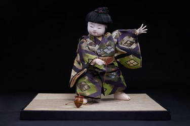

43 hiện vật búp bê Nhật Bản. Chạm vào ảnh để đọc thuyết minh.
日本人形43体。写真を選ぶと詳しい解説が読めます。
Kokeshi · こけし

No.1
Amabie
アマビエ

No.2
Chồi non
萌芽

No.3
Yayoi
弥生

No.4
Bé gái
童女

No.5
Vườn hoa
花園

No.6
Tĩnh tâm
静心

No.7
Dòng Tsugaru
津軽系

No.8
Dòng Tsugaru
津軽系

No.9
Dòng Tsugaru
津軽系

No.10
Dòng Tsugaru
津軽系

No.11
Dòng Tsugaru
津軽系
Búp bê chính · メイン人形

No.12
Vũ điệu
舞

No.13
Bảy dù che
七枚笠

No.14
Sáu cung đàn "KOTO"
六段の調べ

No.15
Lễ đền đầu năm mới
初詣で

No.16
Đền Doujouji
道成寺

No.17
Thiếu nữ hoa tử đằng
藤娘

No.18
Cô dâu
花嫁

No.19
Búp bê Kyoto
京人形

No.20
Búp bê Kyoto
京人形2

No.21
Đêm xuân
春の宵

No.22
Hoa văn nổi (Áo quần sột soạt)
きぬずれ

No.23
Nhịp điệu
韻

No.24
Giỏ hoa
花筺

No.25
Người đàn ông lớn tuổi
翁

No.26
Ngài Sukeroku
助六

No.27
Lãnh chúa trẻ
若殿

No.28
Thiên hoàng Jinmu
神武帝
Búp bê bổ sung · 追加人形

No.29
Cả ngày dài
ひねもす

No.30
Ở nhà
おるすばん

No.31
Sẵn sàng
身支度

No.32
Búp bê em bé tập bò
這い這い人形

No.33
Búp bê Ichimatsu (nam)
市松人形（男）

No.34
Búp bê Ichimatsu (nữ)
市松人形（女）

No.35
Búp bê trong tư thế ngồi
お座り人形

No.36
Búp bê Thái tử
宮様人形
No.37
Búp bê Hoàng cung — Thanh kiếm phá tà
御所人形 破邪の剣

No.38
Búp bê Hoàng cung — Cầm mặt nạ
御所人形2 面持ち

No.39
Trò chơi rồng rắn lên mây
子とろ

No.40
Búp bê Izukura
いづくら（男）

No.41
Búp bê Izukura
いづくら（女）

No.42
Con quay
こま回し

No.43
Búp bê Hanasugata
華姿